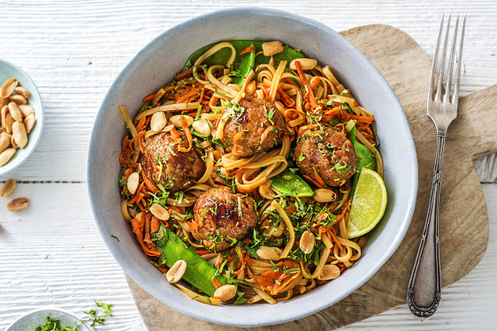

Asian Pork Meatballs

Asian Pork Meatballs
with Rice Noodles & Veggies
These fresh, zingy, meatballs bring a delicious twist to a traditional stir-fry. Sweet, sticky, and with a kick of heat, the delicious sauce in this recipe is guaranteed to take your stir-fry game to a new level of greatness.
Allergens:
Cereals containing gluten; Soya; Peanut
Ingredients
- 240g Pork mince
- 15g Panko breadcrumbs
- 50ml Soy Sauce
- 25g Salted Peanuts
- 1 Lime
- Ginger
- 50g Ketjap Manis
- Spring Onion
- 10g Coriander
- Garlic clove
- 150g Sugar snap peas
- 100g Rice Noodles
- 1 Carrot
Instructions
-
Remove the root from the spring onion and thinly slice. Peel and finely grate the ginger and garlic (or use a garlic press). Zest the lime and cut in half. Remove the ends from the carrot (no need to peel!) and coarsely grate. Roughly chop the coriander (stalks and all). Boil your kettle.
-
Put the rice noodles in a bowl. Pour enough boiling water over the noodles to completely submerge them, then cover with clingfilm or a plate. Leave to the side for 8-10 mins before draining in a colander. TIP: Check the noodles are soft enough to eat before draining. If not, just leave them in the hot water for 2 mins longer. Once drained, rinse under a cold tap, put back into the bowl and cover with cold water.
-
Pop the pork mince into a mixing bowl and add half the spring onion, half the ginger, half the garlic and all the lime zest. Add a quarter of the soy sauce, all the panko breadcrumbs and mix well to combine. Shape the mixture into four meatballs per person. IMPORTANT: Remember to wash your hands and equipment after handling raw meat!
-
Heat a drizzle of oil in a large frying pan on medium-high heat. Add the meatballs and fry until browned all over, turning occasionally, 8-10 mins. Once the meatballs are browned, add the remaining spring onion, ginger and garlic along with the mangetout and carrot, then stir-fry everything for 1 minute. IMPORTANT: The meatballs are cooked when they are no longer pink in the middle.
-
Drain the noodles. Add the ketjap manis and remaining soy sauce to the meatballs in the pan, stir and simmer for 2-3 mins, then tip in the noodles and half the coriander. Squeeze in the juice from half the lime. Toss to combine and heat until the noodles are piping hot, 2-3 mins. Taste and season with black pepper if you feel it needs it.
-
Serve the noodles and meatballs in bowls and sprinkle over the rest of the coriander and the peanuts. Serve with a wedge of the remaining lime (for anyone that likes things extra zesty). Enjoy!
See more recipes: